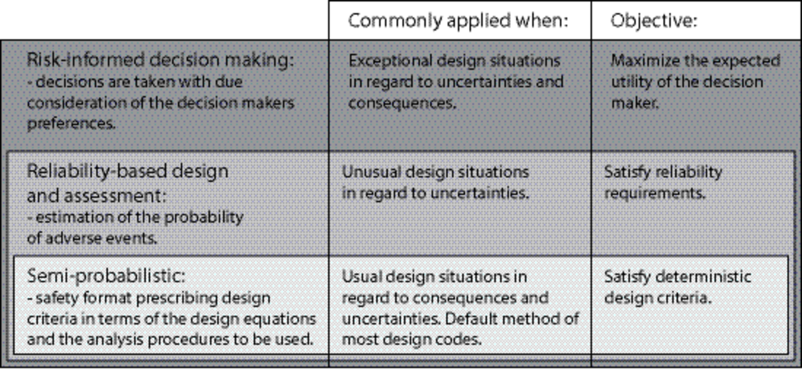

1. Codes as decision rules#
Reading time
About ten minutes. This chapter and the next condense Sections 1–2 of [Köhler, 2026] and the review in [Köhler et al., 2025].
1.1. Why structures are regulated by codes#
The built environment is fundamental to the economy and to the sustainable development of society, and a large share of the economic and natural resources available to a society goes into developing, maintaining and renewing structures. Decisions about structures should therefore be optimal in the sense that the benefits as well as the possible adverse consequences of failure — loss of lives, damage to the environment, direct and indirect costs — are considered and managed by appropriate and timely engineering decisions.
Structural codes and standards are the instrument for this. Created jointly by scientists, manufacturers, regulators and users, they contain decision rules for the design, operation and maintenance of the built environment: which materials, methods and verification procedures to use in order to obtain sufficiently safe, functional and durable structures. Codes are typically mandatory, and they directly determine the material quantities in construction projects — and with that the embodied greenhouse-gas emissions. Their careful development is, in this regard, a matter of sustainability as much as of safety.
The convergence of structural reliability theory and engineering practice took place in the 1970s, when the community became interested in using reliability theory for code development [Lind, 1971, Ravindra and Galambos, 1978]. The objectives of the several parallel efforts were to (i) provide more consistent and predictable reliability across the range of design situations, (ii) account explicitly for the uncertainties in loads and material strengths through partial factors, (iii) provide a uniform design process across materials, and (iv) provide a tool for updating standards in a rational and uniform manner. Load and resistance factor design (LRFD), with partial factors on both the action and the resistance side, was introduced in North America by Allen [Allen, 1976] and by Ravindra and Galambos [Ravindra and Galambos, 1978]; the Eurocodes follow the same format.
1.2. Three levels of decision making#
ISO 2394 [ISO, 2015] distinguishes three levels of detail at which decisions about structures can be made (Fig. 1.1).


Fig. 1.1 Levels of structural engineering decision making according to ISO 2394:2015.#
Risk-informed decision making allows for the highest level of detail and broadly follows Bayesian decision analysis [JCSS, 2008]. The effect of the decision alternatives — structural measures such as dimensions, material grades and the structural system, non-structural ones such as quality control, inspection and monitoring — on the expected utility is evaluated within the constraints of the project. The flexibility of the approach leaves many modelling assumptions to the engineer; its application requires a high level of expertise.
Reliability-based design identifies the design decision such that a predefined reliability requirement is met. The requirement may be derived from experience — the inherent reliability of traditionally accepted solutions [Baravalle and Köhler, 2017, Ditlevsen, 1997] — or from a formal risk-informed calibration, in which case it can be differentiated according to the consequences of failure and the relative cost of safety measures. Guidance on reliability methods and on the representation of uncertainties is given in ISO 2394 and in the JCSS Probabilistic Model Code [JCSS, 2001].
Semi-probabilistic design is the lowest level of detail: a design complies when a representative value of the resistance exceeds a representative value of the load effect, both obtained from tabulated characteristic values and partial factors. This is the format of the Eurocodes and of most codes worldwide. Its simplicity is what makes broad standardisation possible.
1.3. Relevance and correspondence#
The three levels support the same overarching objective, and they correspond to one another: the ability to account for the particular conditions of a design situation — and hence to find a more optimal solution — increases with the level of detail, and so does the complexity. This is why higher-level approaches are used to verify or calibrate lower-level ones. From a regulatory perspective, where a unified set of rules must be standardised for broad application, the semi-probabilistic format is advantageous; its design, calibration and layout must, however, be based — directly or indirectly — on risk-informed considerations, since only that level allows the higher-level objectives to be considered explicitly.
Code calibration, the subject of the next chapter, is exactly this link: the reliability-based level is used to choose the partial factors of the semi-probabilistic level.
1.4. A remark on time-variant actions#
Conventional calibration represents time-varying actions indirectly, through the distribution of their maximum over a reference period (annual maxima for wind and snow, five-year maxima for imposed loads in the Eurocode study), fitted to historical observations. This presumes that the action process is stationary and ergodic over the time horizon of the code. For climate-sensitive actions this presumption is increasingly difficult to justify: both the characteristic values and the coefficients of variation may change over time, and since the partial factors are sensitive to the variability, trends in the coefficient of variation may matter as much as trends in the characteristic fractile. The model used in this documentation is a stationary one; the limitation should be kept in mind when reading absolute reliability indices.